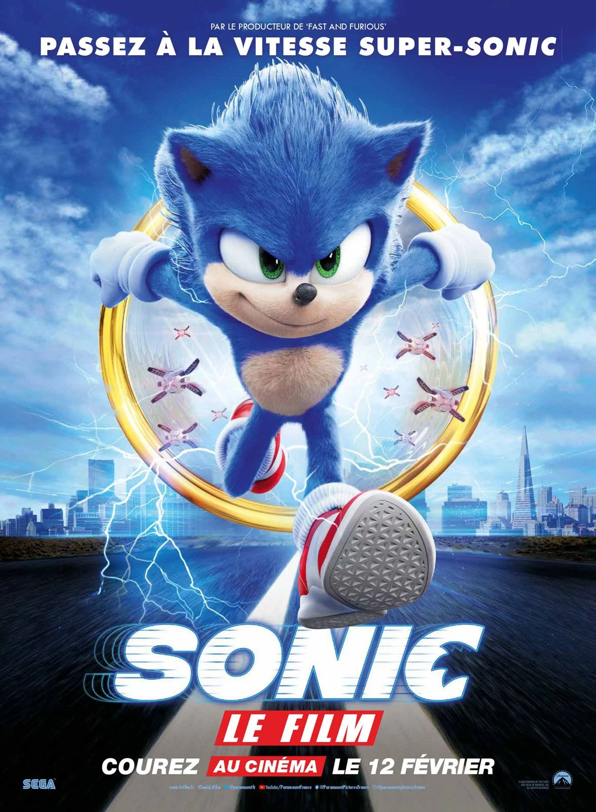
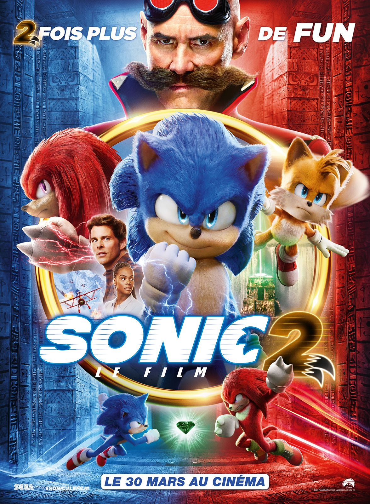
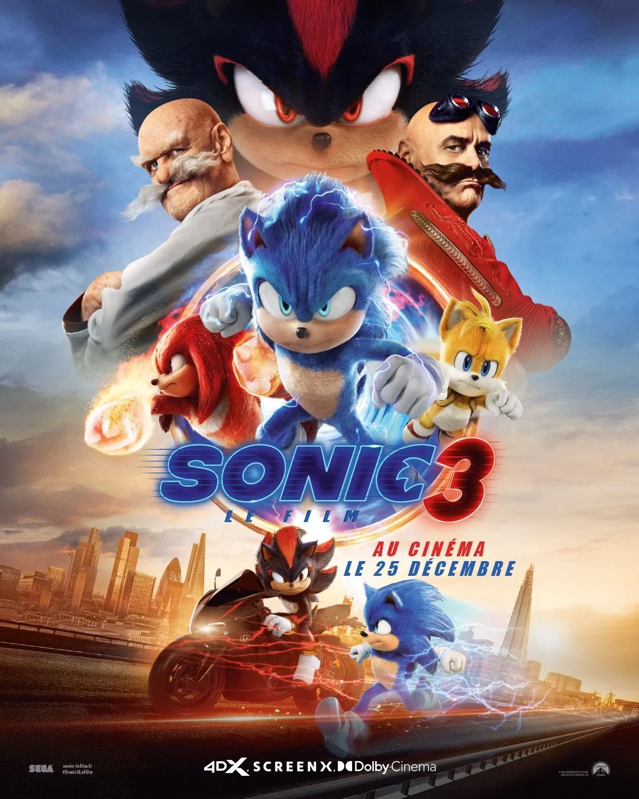

De l'écran de ton jeu vidéo au grand écran. L'univers des films Sonic mélange aventure, humour et science-fiction, en suivant le célèbre hérisson bleu capable de courir à une vitesse supersonique. Originaire d’une autre planète, Sonic se retrouve sur Terre, où il doit se cacher et apprendre à vivre parmi les humains tout en protégeant ses pouvoirs. Il se lie d’amitié avec Tom, un shérif local, et rencontre bientôt Tails et Knuckles, ses alliés fidèles issus de son monde, alors qu’ils affrontent le génial mais machiavélique Dr Robotnik, obsédé par le contrôle et les Chaos Emeralds, pierres mystérieuses et puissantes. Les films explorent des thèmes de loyauté, d’amitié et de courage, dans un mélange de comédie, d’action spectaculaire et de références aux jeux vidéo originaux, tout en construisant une mythologie où la Terre et d'autres mondes coexistent et où les héros doivent unir leurs forces pour protéger ce qui est précieux.

Le film suit Sonic, un hérisson anthropomorphe bleu qui vient d'une autre planète et a le pouvoir de courir à une vitesse prodigieuse. Un jour, il provoque accidentellement une panne de courant massive qui s'étend sur tout le Nord-Ouest Pacifique. Le gouvernement fait alors appel au Dr Robotnik, un scientifique excentrique et fan de robotique, pour comprendre ce qui s'est passé. Pendant ce temps, le shérif de Green Hills, Tom Wachowski, rencontre Sonic et décide de l'aider en se rendant à San Francisco pour récupérer les anneaux qu'il a perdu, qui lui permettront de s'échapper vers une autre planète. Sur le chemin, ils doivent contrer les attaques des drones de Robotnik, qui souhaite capturer le hérisson bleu et s'emparer de son pouvoir. Avec plus de 58 millions de dollars de recettes récoltés en seulement une journée, il est le meilleur démarrage pour une adaptation de jeu vidéo de tous les temps au cinéma

Bien installé dans la petite ville de Green Hills, Sonic veut maintenant prouver qu'il a l'étoffe d'un véritable héros. Un défi de taille se présente à lui quand le Dr Robotnik refait son apparition. Accompagné de son nouveau complice Knuckles, ils est en quête d'une émeraude dont le pouvoir permettrait de détruire l'humanité toute entière. Pour s'assurer que l'émeraude ne tombe entre de mauvaises mains, Sonic fait équipe avec Tails. Commence alors un voyage à travers le monde.

Sonic, Knuckles et Tails sont à nouveau réunis face à un puissant nouvel adversaire, Shadow, un mystérieux vilain doté de pouvoirs comme ils n'en ont encore jamais vu. Leurs habiletés étant toutes surclassées, l'Équipe Sonic doit tenter une alliance improbable dans l'espoir d'arrêter Shadow et de protéger la planète.
En 2013, Sony Pictures Entertainment acquiert les droits de distribution d'un film avec Sonic. En décembre 2013, un film mêlant animation et prise de vues réelles est développé par Sony Pictures et Marza Animation Planet. La production est notamment assurée par Neal H. Moritz via sa société Original Film et par Takeshi Ito et Mie Onishi. Le scénario est signé par Evan Susser et Van Robichaux.
En 2016, Hajime Satomi, PDG de Sega, annonce le film pour 2018. La société Blur Studio et le réalisateur Jeff Fowler sont chargés de développer le film. Jeff Fowler fait alors ses grands débuts de réalisateur. Le scénario est ensuite réécrit par Patrick Casey et Josh Miller.
En décembre 2017, Paramount Pictures récupère les droits après l'abandon de Sony. En février 2018, il est annoncé que le film sortira le 9 décembre 2019. Mais après les critiques concernant le physique du hérisson bleu, la sortie est repoussée au 14 février 2020.
Le 9 décembre 2019, Paramount Pictures diffuse une nouvelle bande-annonce, dévoilant le nouveau design de Sonic, plus fidèle aux jeux vidéo.
Jeff Fowler, réalisateur des films Sonic, travaille au sein de la société californienne Blur Studio, située à Culver City et reconnue internationalement pour ses effets spéciaux et son animation.
En 2004, il écrit et réalise le court-métrage Gopher Broke, nommé aux Oscars dans la catégorie Meilleur court-métrage d'animation. Sonic, le film est sa première réalisation destinée au grand écran.
En mai 2018, Paul Rudd est annoncé dans le rôle d'un policier nommé Tom, mais c'est finalement James Marsden qui est engagé.
En juin 2018, Tika Sumpter rejoint la distribution, et Jim Carrey obtient le rôle du Dr Robotnik. En août 2018, Ben Schwartz est choisi pour prêter sa voix à Sonic. Adam Pally et Neal McDonough complètent ensuite le casting.
Idris Elba rejoint plus tard l'équipe pour la voix de Knuckles, Colleen O'Shaughnessey quand a elle incarne Tails dans le deuxième volet, et Keanu Reeves prête sa voix à Shadow pour le troisième films de la saga.
Le tournage débute le 31 juillet 2018 à Vancouver, sous le titre Casino Night, en référence à un niveau de Sonic the Hedgehog 2 sur Mega Drive.
Le tournage se déroule également dans d'autres villes de Colombie-Britannique comme Coquitlam et Burnaby, ainsi qu'à New York.